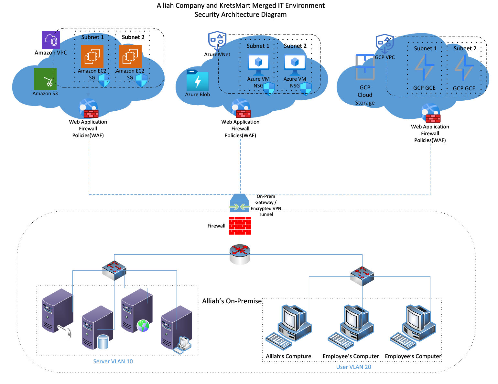

Project objective
Reduce data-transfer risk, inconsistent access control, slow incident detection, and compliance gaps after two retail organizations merge their infrastructure.
What I produced
- Assessed the risks created by combining legacy on-premises systems with AWS, Azure, and Google Cloud.
- Compared network segmentation with unified identity and access management as primary control strategies.
- Selected segmentation as the recommended design to limit lateral movement and isolate critical systems.
- Created a multi-cloud architecture covering VLANs, VPCs/VNets, subnets, firewalls, WAFs, security groups, ACLs, and centralized oversight.
Key decisions
- Separate inventory, e-commerce, customer-database, and administrative resources into controlled zones.
- Apply consistent traffic rules at both physical and cloud boundaries.
- Use standardized templates and automated validation to reduce multi-cloud misconfiguration risk.
- Support PCI DSS, GDPR, and CCPA obligations with isolation, monitoring, and documented access paths.
4 environmentsOn-premises plus three cloud platforms
2 controls comparedSegmentation and unified IAM
3 compliance driversPCI DSS, GDPR, and CCPA
Validation and analysis
- Evaluated scope, complexity, timeline, budget, strengths, and weaknesses for both proposed controls.
- Documented risks related to configuration complexity and cost, with specific mitigation steps.
- Mapped design advantages to business stakeholders, incident response, and compliance needs.
What I would improve next
- Add a unified identity layer alongside segmentation rather than treating the controls as mutually exclusive.
- Implement a cloud security posture management platform and centralized SIEM.
- Define measurable acceptance tests for cross-cloud flows and denied paths.